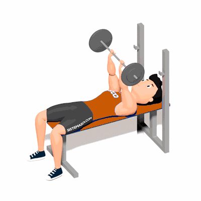

Supino Fechado

É um ótimo exercício para recrutar todas as cabeças do tríceps e gerar uma grande hipertrofia neste grupo muscular.
Ficha Técnica
Tipo: Musculação
Grupo Muscular: Tríceps
Aparelho: Nenhum
Músculos: Nenhum
Como realizar
- Deitado e com os pés no chão, você deverá realizar a pegada na barra que, preferencialmente deve ser a "pegada falsa", ou seja, com o dedão na mesma linha dos outros dedos e não entrelaçado com a barra;
- A distância entre uma mão e outra deve ser um pouco menor do que a largura dos ombros ou, quanto muito, na largura dos ombros;
- Retirando a barra do hack, você deve colocar barra mais ou menos na linha do seu estômago, a fim de tirar ao máximo o peitoral dessa linha e não utilizá-lo;
- Você inicia a descida da barra de maneira controlada e um pouco antes de ela chegar no seu tronco, você explode na subida, com a extensão dos cotovelos;
- Procure não usar a força elástica dos músculos e mantenha a tensão no movimento o tempo todo.
 RC STORE
RC STORE